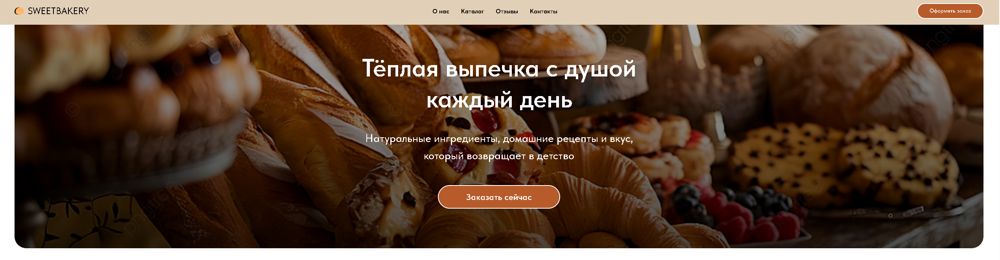

Постоянные покупатели
Выбирают свежий хлеб, выпечку и десерты для дома. Им важны понятный ассортимент, качество ингредиентов и быстрый доступ к популярным позициям.
Современный сайт ремесленной пекарни, который знакомит посетителей со свежей выпечкой, фирменными десертами и историей бренда, создавая атмосферу уюта и направляя к заказу или посещению пекарни.

В рамках проекта я исследовал конкурентов, разработал структуру сайта и пользовательские сценарии, подготовил прототипы, сформировал визуальный стиль и создал адаптивные версии интерфейса.
Я также реализовал проект на платформе Tilda, подключил форму обратной связи, подготовил интеграцию с CRM и выполнил базовую SEO-настройку перед публикацией.
SweetBakery — современный сайт ремесленной пекарни, который знакомит посетителей с ассортиментом свежей выпечки, фирменными десертами и историей бренда.
Структура объединяет главную страницу, каталог, рассказ о пекарне, преимущества, популярную продукцию, отзывы и контакты. Основная задача сайта — создать атмосферу уюта и мотивировать пользователя оформить заказ или посетить пекарню.
Требовалось разработать современный адаптивный сайт с эмоциональной визуальной подачей, удобной навигацией и понятной структурой.
Бизнес-цели: представить ассортимент и ценности пекарни в цельной визуальной системе, поддержать доверие к качеству продукции и направить посетителя к заказу.
Пользовательские задачи: быстро познакомиться с популярной продукцией, перейти в каталог, узнать историю пекарни и найти контакты или форму обратной связи.
Ограничения: сохранить выразительность крупных фотографий выпечки, обеспечить удобный просмотр каталога на мобильных устройствах и подготовить проект к публикации на Tilda.
Основная аудитория — мужчины и женщины 20–55 лет, семьи с детьми, любители свежей выпечки, десертов и авторской кухни.
Выбирают свежий хлеб, выпечку и десерты для дома. Им важны понятный ассортимент, качество ингредиентов и быстрый доступ к популярным позициям.
Ищут уютное место и продукты для совместных завтраков, праздников и семейных встреч. Обращают внимание на атмосферу, ассортимент и доверие к бренду.
Интересуются фирменными десертами и необычными сочетаниями. Для них важны выразительная презентация продукции, история пекарни и внимание к деталям.
Я создал тёплую визуальную концепцию с крупными фотографиями продукции, аккуратной типографикой и спокойной цветовой палитрой. Интерфейс поддерживает атмосферу пекарни и помогает сосредоточиться на ассортименте.
Структура ведёт посетителя от эмоционального первого экрана к популярной продукции, каталогу, преимуществам и информации о пекарне.
Крупные фотографии свежей выпечки и десертов создают эмоциональное впечатление, а спокойная типографика сохраняет ясность информации.
Форма обратной связи, подготовка CRM и базовая SEO-настройка дополняют визуальную часть и делают проект готовым к публикации на платформе Tilda.
Первый экран передаёт атмосферу бренда и сразу направляет к заказу. Далее пользователь знакомится с каталогом, популярной продукцией, преимуществами, отзывами и контактной информацией.
Проведено исследование конкурентов, спроектированы структура, пользовательские сценарии и прототипы ключевых страниц.
Создан тёплый визуальный стиль с крупными фотографиями, аккуратной типографикой и спокойной цветовой палитрой.
Подготовлены версии для Desktop, Tablet и Mobile с удобным просмотром каталога и ключевых разделов.
Сайт реализован на Tilda, подключена форма обратной связи, подготовлена CRM и выполнена базовая SEO-настройка.
Разработаны прототипы, визуальная система, компоненты интерфейса и адаптивные макеты проекта.
Проект охватывал полный цикл работы — от исследования и архитектуры до адаптивной реализации, подключения основных функций и подготовки сайта к публикации.
Изучены конкуренты и подходы к презентации ассортимента современных ремесленных пекарен.
Сформирована структура главной страницы, каталога, информации о бренде, отзывов и контактов.
Разработаны пользовательские сценарии и прототипы, связывающие знакомство с продукцией и переход к заказу.
Создан тёплый интерфейс с эмоциональными фотографиями, аккуратной типографикой и спокойной палитрой.
Подготовлены версии интерфейса для Desktop, Tablet и Mobile.
Проект собран на Tilda, подключена обратная связь, подготовлена CRM и выполнена базовая SEO-настройка.